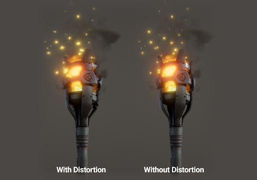

标准粒子着色器
Unity 标准粒子着色器是可用于渲染各种粒子系统效果的内置着色器。这些着色器提供标准着色器不具备的各种粒子特有功能。
要使用粒子着色器，请执行以下操作：
1.选择要将着色器应用到的材质。例如，可将火焰材质应用于火焰粒子系统效果。
2.在材质 (Material) 的 Inspector 中，选择 Shader Particles。
3.选择要使用的粒子着色器，例如 Standard Surface。
4.在 Inspector 中启用和禁用各种粒子着色器属性。
属性
标准粒子着色器具有与标准着色器相同的属性集（或这些属性的子集，具体取决于着色器）。本页面将介绍标准着色器属性之外的其他属性和选项。如需了解标准着色器属性的信息，请参阅有关材质参数的文档。
Blending Options
所有标准粒子着色器都具有__混合选项 (Blending Options)__，允许以不同方式将粒子与周围的对象混合。
| 属性： | 功能： |
|---|---|
| Rendering Mode | 标准粒子着色器可以具有以下 Rendering Mode 选项，这些选项控制着色器的最终颜色与背景颜色的组合： Additive：将背景颜色和最终粒子颜色相加。非常适用于发光效果，例如可能用于火焰或魔法的效果。 Subtractive：从背景中减去最终粒子颜色，使粒子相对于背景变暗。适用于雾化效果，例如可能用于蒸汽或浓黑烟雾的效果。 Modulate：将最终粒子颜色与背景颜色相乘。适用于入口和光线。 |
| Color Mode | 控制反照率纹理与粒子颜色的组合方式。Color Mode 选项为： Multiply：将粒子反照率颜色与粒子纹理相乘。 Additive：保留热点，例如粒子纹理的白色部分，同时将粒子反照率颜色与纹理的较暗像素相加。 Subtractive：从粒子纹理中减去粒子反照率颜色。 Overlay：提供更多与原始颜色的对比度，并将粒子反照率颜色与灰度值相加。与 Additive 相似，但保留原始颜色。 Color：使用粒子纹理的 Alpha 通道和粒子本身的反照率颜色。适用于改写相同颜色的粒子并同时保持其原始“形状”。 Difference：从纹理中减去粒子反照率颜色，或从颜色中减去纹理，从而获得正值。适用于想要更多动态颜色变化的一系列效果。 请参阅表下的图像以查看此效果的演示。 |
Main Options
| 属性 | 功能 |
|---|---|
| Flip-Book Mode | 将翻页渲染为单独的帧或将帧混合在一起以提供更流畅的动画。设置为以下选项之一： Simple - 将翻页中的帧渲染为单帧序列。 Blended - 混合翻页中的帧以将翻页渲染为平滑动画。 |
| Two Sided | 渲染粒子的正面和背面。禁用时，Unity 仅渲染几何体的正面，即摄像机视图中的面。 |
| Enable Soft Particles | 当粒子接近写入深度缓冲区的对象表面时淡出粒子。当粒子与不透明几何体相交时，这对于避免硬边非常有用。例如，通过启用软粒子，可以使粒子系统发射接近不透明表面的粒子，而不会与表面产生突兀的相交：
|
| Enable Camera Fading | 当粒子接近摄像机时淡出粒子。设置为： Near fade - 距离最近的粒子从摄像机视野中淡出之前可以到达摄像机。 Far fade - 距离最远的粒子在从摄像机视野中淡出之前可以远离摄像机。 |
| Enable Distortion | 使粒子使用在粒子之前绘制的对象执行伪折射。失真是为火焰产生热雾效果的理想选择，例如：  此效果将当前帧捕获到纹理，因此成本可能非常高昂。 |
标准粒子表面着色器 (Standard Particles Surface Shader)
此着色器具有与标准着色器类似的功能，但特别适合粒子。与标准着色器一样，此着色器支持基于物理着色。不包括那些不适合动态粒子的功能，例如光照贴图。

标准粒子无光照着色器 (Standard Particles Unlit Shader)
这种简单的着色器比表面着色器更快。支持所有通用粒子控件，例如翻页混合和失真，但不执行任何光照计算。
2017–10–16 页面已发布
在 2017.3 版中添加了标准粒子着色器NewIn20173